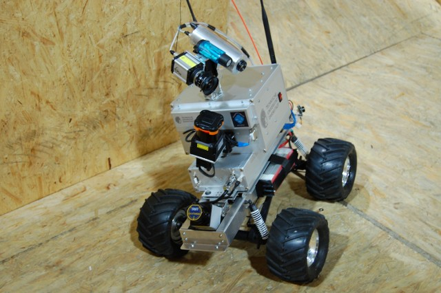
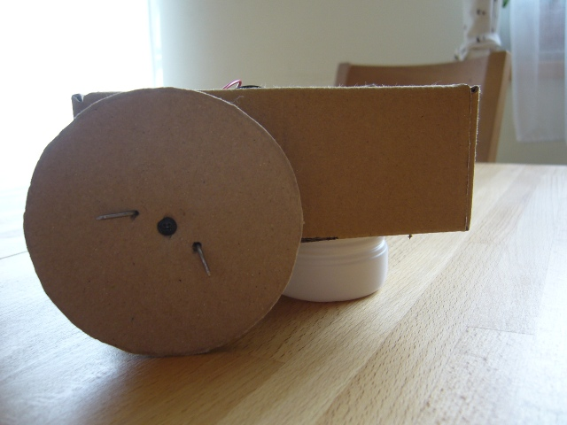
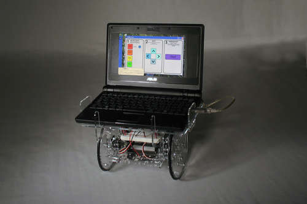

Ezen az oldalon arról lesz szó, hogy miként lehet viszonylag olcsó, működőképes robotot házilag építeni, mely képes a kerekein gurulni, és az érzékelője segítségével akadályokat kikerülni. Cél az alábbi robot megépítése, kevesebb, mint 30 ezer forintból. Bár lehet, hogy elsőre nem túl látványos a sok karton miatt, a kivitelezésben nincs lényeges különbség, ha az egészet egy játékautóba építjük, egy építőkészlet elemeit használjuk föl, vagy ha plexi, esetleg fém lemezt használunk. A költségek persze arányosan növekednek. Később talán még visszatérek ezekre a lehetőségekre.
Időközben elkészült a robot egy újabb változata egy pénzgyűjtő robot, amiről itt lehet olvasni.

Miért is építünk robotot?
Ide nagyon szép blabla szövegeket lehetne írni, a jövőről, gyorsuló világunkról, a magyar iparról, a fiatalok oktatásáról, de ezt inkább kihagyom. Akit ez bővebben érdekel, az magyar nyelven is tájékozódhat, többek között az alábbi oldalakon: Száz robotot, ezeret, Jönnek a robotok, NJSZT Robotnap 2008.Szerintem azért érdemes robotot építeni, mert
- érdekes,
- sokat lehet tanulni belőle mechanika, elektronika, programozás, stb. témakörökben,
- az eredmény aktuális és kézzelfogható,
- nem túl költséges.
|  | |
A témáról rengeteg jó oldalt lehet találni (lásd a listát lentebb), de viszonylag kevés magyar nyelvűt, ezért készítettem ezt az oldalt. Az alapokhoz szerintem segítség lehet, viszont aki komolyan el szeretne mélyedni a témában, annak az angol nyelv ismerete amúgy is szükséges lesz.
A robotépítés egy évtizede még jóval drágább mulatság volt, mint most. Persze komoly robotokat építeni most is sok pénzbe kerül, de egyszerűbb robotot már egy átlagos fényképezőgép árából is össze lehet rakni. Aki pedig ért a forrasztáshoz, hajlandó régi háztartási eszközökből, játékokból a szükséges alkatrészeket kiszerelni, az még olcsóbban hasonló eredményre juthat.
Kezdési lehetőségek
Ezen az oldalon elsősorban kerekeken guruló, villanymotorral meghajtott robotjárművekről lesz szó. Az ilyen robotokkal való ismerkedésnek többféle útja is elképzelhető.
- Ha valaki jártas az elektronikában, elfekvőben vannak mindenféle
alkatrészei, és tud forrasztani, akkor az elég olcsón meg tud építeni
egy egyszerű robotot. Ezen
az oldalon a szerző már 50 $-ból, azaz 10-15 ezer forintból készít
egy autonóm robotot.
Hasonló eredmény Európából "50 eurós robot" néven érhető el. Az elkészült robot kicsit drágább, de cserébe kicsit elegánsabb, és kevésbé kell "bepiszkolnunk" a kezünket, vagyis kissé magasabb absztrakciós szinten kell elvégezni a feladatot.

Szerencsére már magyar nyelven is vannak robotépítéssel foglalkozó oldalak, például ez, mely egy WILL-I nevű robot elkészítéséhez és továbbfejlesztéséhez nyújt segítséget.
- Ha valaki csak édi-bédi kis önjáró robotot szeretne programozás, szerelés nélkül, annak sem kell elkeserednie. Rengeteg helyen lehet már ilyet venni, rendelni, például itt.
- Aki szerelgetne, de örülne, ha minden a keze ügyében lenne, és
nem magának kellene kitalálnia az összes részletet, annak a LEGO Mindstorms készlet lehet
segítségére, ami a nagyobbaknak való hagyományos LEGO elemek mellett
egy kis programozható számítógépet, motorokat és érzékelőket tartalmaz,
mintegy 70 ezer forintért.
Hasonló kihívást jelent a Parallax cég Boe-Bot nevű robotjának vagy az Arduino Controlled Servo Robotnak az összeszerelése. Ez utóbbi alapján készült az én robotom is. - További robotépítő-készletek találhatóak többek között itt.
- Végül, aki robotot csak programozni szeretne, de valódi robotot
még távolról sem akar látni, az a Colobot-hoz
hasonló háromdimenziós szimulációs környezetet próbálhat ki.

Csak csavarhúzóm van! - verzió
Mivel a többi irányt már nagyjából ismerem, ezért ezúttal az 1. változatnak láttam neki. Azonban mivel nem szerettem volna forrasztani, saját nyomtatott áramkört tervezni, maratni, ezért csak olyan szerszámokat használtam föl, amik egy átlagos szerszámos táskában megtalálhatók. Ez valószínűleg a lelkes fiatal diákolvasóknak (ha valaki egyáltalán olvassa az oldalt) is segítség lehet.
Hosszabb távon egy olyan robotot szeretnék csinálni, ami egy masszív, kerekeken guruló vázra rögzíthető laptoppal végzi a számítási feladatokat, és különféle szenzorokon keresztül gyűjti be az információkat a külvilágból. Továbbá egy vagy több robotkarral is rendelkezne, amivel egyszerűbb feladatokat tudna elvégezni. Ehhez először egy prototípust készítettem, ami az elektronika mellett a ház körül található, egyszerű alkatrészekből áll, de tartalmazza mindazon elemeket, ami a komolyabb változathoz kell.
Egy guruló robotjármű elkészítésének főbb részfeladatai a következők:
- Robot tervezése
- Váz megépítése
- Elektronika beépítése
- Programozás
Robottervezés
Nem lehet eléggé hangsúlyozni, hogy erre a fázisra mennyire szükség van. Ahogy a society of robots blog szerzője is írja, eredetileg az idő 10%-át fordította tervezésre, 90%-át a megvalósításra. Mostanra, hogy tapasztalt robotépítő lett, ez az arány megfordult.Ez nem azt jelenti, hogy ugyanannyi időt szerel, csak sokkal többet "vacakol" előtte: ennél sokkal jobb a helyzet. Eleinte számtalan apróbb, nagyobb probléma merült föl szerelés közben, ami miatt esetleg teljesen újra kellett tervezni a robotot. Esetleg a teljes feladat kudarccal végződött. Mostanra az alapos tervezésnek köszönhetően, amikor az összes alkatrész megérkezik, jó eséllyel még aznap, pár órán belül el tudja végezni az összeállítást.
A tervezéssel el lehet kerülni a "Miért nem mozdul meg a robot, pedig a motorok dolgoznak?" típusú kérdéseket. Az ilyen előzetes igényfelmérésben segíthet a society of robots calculator oldala, ahol ki lehet számítani a robot súlyának megfelelő erejű motort, a szükséges erőforrásokat és hasonlókat. Az oldal egyúttal tutorialokat, azaz ismertetőket is tartalmaz a különféle alkatrészek kiválasztásához.
Az első robot(ok) megtervezésénél a legfontosabb a KISS alapelv betartása: Keep It Simple, Stupid, azaz mindent a lehető legegyszerűbben kell megvalósítani, nem az első robotnál kell kitalálni forradalmian új haladási módot vagy útvonalkeresési algoritmust. Ezeket a későbbi robotokra érdemes tartogatni.
Először is érdemes elkészíteni a robot tervrajzát, akár papírt és ceruzát felhasználva, akár valamilyen számítógépes modellező eszközt alkalmazva: utóbbiból, a már klasszikus CAD szoftverek mellett, amelyek elég drágák és összetettek, kisebb feladatokhoz elég az ingyenes SketchUp is.
A 30 ezer forintos robot tervezése
A saját robot esetében egy olyan kereken guruló járművet szerettem volna csinálni, mely kitér az előtte felbukkanó akadályok elől. Ehhez egy előregyártott nyomtatott áramkör felhasználásával, két motorral és egy ultrahangos szenzorral felszerelt robotot építettem, aminek a váza és a kerekei egyszerű kartonpapírból készültek.
A karton mellett azért döntöttem, mert egyszerű dolgozni vele és az eredmény elég könnyű: az elektronikán, a motorokon és akkumulátorokon kívül semmit nem kell szállítani. Az előregyártott Arduino áramkör USB porton tud csatlakozni egy számítógéphez, saját kezelő nyelvvel, fordítóprogrammal és letöltő eszközzel rendelkezik, így tetszőleges linuxos, windowsos géppel használható. Ezen kívül az áramkör csatlakozói képesek szenzorjeleket fogadni és a motorokat mozgásra bírni.
A robot felépítése rendkívül egyszerű lett, az egész nem több, mint egy lap, amire a szükséges alkatrészek felrögzíthetők, valamint az oldalfalak, amik a kerekeket és a szonárt tartják.
A felhasznált alkatrészek listája a következő:
- 1 db Arduino Duemilanove nyomtatott áramkör

- 2 db Parallax (Futaba) körbeforgó szervomotor
- 1 db Parallax Ping ultrahangos szenzor
- 1 db (5 elemű) sorkapocs, azaz csoki

- 1 db elemtartó, az előny, ha van rajta kapcsoló
- szervokábel
- 1 db kartondoboz

- 4 db AA akkumulátor vagy esetleg ceruzaelem
- vezetékek
- csavarok, anyák
- kartonlapok
- 1 db henger alakú joghurtos doboz
Az elkészítéshez és működtetéshez felhasznált eszközök:
- 1 db USB A-B típusú kábel
Számítógép és digitális fényképező, kamera, GPS stb. összekötésére is ezt szokták használni. - számítógép, célszerűen laptop
- csavarhúzó
- körző
- olló
- tapétavágó, azaz sniccer
Beszerzés
A fenti eszközök és alkatrészek interneten keresztül viszonylag
könnyen megrendelhetőek. Ezen kívül kis utánajárással Magyarországon
is megvásárolhatóak. Az Arduino eredetijét a Kitchen Budapestnél vagy egy
kompatibilis eszközt a TávIRnál
vehetünk, kb. 10000 Ft-ból. Az ultrahangos érzékelőt én a Chipcadnél találtam 6600 Ft-ért, de biztos
máshol is van. A szervokat szintén itt vettem meg, darabját 3100
Ft-ért.
A szervokat egyébként modellboltban is meg lehet kapni. Ezen kívül még
a szervokábel okozott gondot, ami az Arduino és az ultrahangos érzékelő
összekötéséhez kell, de amint megtudtam, hogy mi a neve, már nem volt
probléma. Végül ezt is egy modell-/játékboltban találtam meg, mintegy
500 Ft-ba került.
A többi alkatrész barkácsáruházból vagy villanyszerelési boltból
beszerezhető, együttesen szintén pár száz Ft-ért.
Ezzel összességében nem költöttem többet, mint 30 ezer forint, ami a cikk címében célul kitűzött összeg.
A váz építése
A váz alapvetően egy 10*14 centiméteres kartondoboz, mely eredetileg egy spotlámpa csomagolóanyaga volt. A dobozt néhány helyen csavarhúzóval kellett átfúrni, illetve a motoroknak és az Arduino csatlakozóinak kellett kis "ablakokat" vágni az oldalfalba.
Először a kartondobozt hajtogattam szét, hogy a megfelelő lyukakat sniccerrel kivágjam. A hátsó falon két nyílás enged hozzáférést az Arduino USB- és tápcsatlakozójának. Az oldalakra vágott egy-egy nagyobb téglalapon a szervomotorok külső felülete kandikál ki. Ezen a részen lehet a kerekeket is rögzíteni. A dobozon már eleve volt egy kis rés elöl, amin keresztül az ultrahangos érzékelő kábelei jutnak a csatlakozásokhoz.
A vágások után a dobozt visszahajtogatva következtek a "fúrások".
Elsőként az Arduino-lapot rögzítettem a doboz aljához a lapon erre a célra kialakított lyukakon keresztül.
Ezután a két oldalsó nyílás mellé fúrt két-két lyukra csavaroztam fel a szervokat. Ehhez először a szervokarokat kell eltávolítani a középső csavarjukkal, hogy a szervok átférjenek a kivágott nyíláson. A szervokra a kartonlapból előzetesen körzővel megjelölt, majd kivágott, 8 centiméteres átmérőjű kerekkel együtt kell a szervokarokat visszacsavarozni. Ha a kerék csak a csavaron keresztül rögzül a szervohoz, akkor haladás közben könnyen elfordul, sőt még a szervo középső csavarját is le lehet így tekerni. Ezért két kicsi, a szervokarokon átmenő szöggel akadályoztam meg az ilyen irányú elmozdulást.
Következett a robot harmadik talajérintkezési pontjának kialakítása. Ehhez a joghurtos doboz aljából vágtam le egy olyan magas részt, amekkora a kerekekből túlnyúlt a robot törzsén, majd ezt a darabot csavaroztam a robot aljához facsavarral. Igazából ezt az Arduino előtt kellett volna vékony, hosszú anyás csavarral megcsinálni, de a szereléskor éppen nem volt ilyen kéznél. Viszont így nagyon óvatosan kellett dolgozni, hogy a nyomtatott áramkör meg ne sérüljön. Erre a célra néhány pár négyzet-centiméteres kartonlapot tettem az Arduino alá.
Végül az ultrahangos szenzort csavaroztam fel a robot elejére a szenzor lapkáján lévő két nyílást felhasználva.
Az elkészült robot így néz ki:
|  | |
Elektronika
Az elektronika kialakítása röviden úgy néz ki, hogy mindent össze kell kötni a központi áramkörrel, vagyis az Arduinoval, és minden eszközt el kell látni árammal.Az Arduino mikrokontroller
Miért is jó az Arduino?
- A központi Atmel ATmega168 egy AVR típusú mikrokontroller, aminek programozása elég komoly irodalommal rendelkezik. Állítólag jobban kidolgozott, mint a szintén nagyon elterjedt PIC szabvány. (Mielőtt valaki azt gondolná, hogy vitát szeretnék indítani, tudom, hogy sokan a PIC-re esküsznek.)
- Az általam vásárolt Duemilanove modellnek USB csatlakozója van (bár igazából soros kommunikációt végez), így könnyen számítógéphez köthető.
- 16 KByte memória, 20 MHz futási sebesség. Tehát tenyérnyi méretben a Commodore 64-vel összemérhető teljesítményt kapunk.
- 14 digitális ki- és bemenete, valamint 6 analóg bemenete van.
- Kiegészíthető újabb áramkörökkel.
- Viszonylag olcsón beszerezhető Magyarországon is.
Összekötés
Az Arduino és a többi hardverelem összekötéséhez én először próbapanelt használtam, majd a helyigény és a súly csökkentése miatt egy sorkapocsra (más néven csokira) cseréltem.
Az összekötés során először is a fekete földvezetékeket az Arduino két Gnd-vel jelölt földelésének valamelyikéhez kell vezetni. A szonár fekete vezetékét az egyik, míg a két szervo és az elemtartó fekete vezetékeit a sorkapcson keresztül a másik földeléshez kötöttem. Az eltérő piros fázisvezetékek két helyről jutnak áramhoz: a szervokat a négy ceruzaakku hajtja a sorkapcson át, a szonár az Arduino 5V-os csatlakozójához van kötve, ami az USB porton keresztül, a laptopról kap áramot. Mivel a szervok 4-6 V feszültségtartományban működnek, ezért akár ezek is kaphatnák az energiát az Arduinoból, de általános szabály szokott lenni, hogy a robot meghajtása és a vezérlése külön áramforráshoz csatlakozzon. Sőt a két szervo akár külön akkumulátorokat is használhatna, amivel azonos feszültségnél a teljesítményt lehetne növelni.
Működése közben a robot a laptopot csak áramfelvételre használja, a vezérlő kód mind az Arduinon fut, így 9V-os akkumulátorral a robot teljesen függetlenné válna a külső áramforrástól, és a feladatvégzés alatt nem kellene mögötte sétálni az USB vezeték miatt. Ehhez a 9V-vel jelölt csatlakozóhoz kell hozzákötni egy koaxiális csatlakozót, aminek a másik vége az akkumulátorhoz kapcsolódik. A vezeték két végéhez szükséges eszközök a következő képeken látszanak:
Ezután már csak a jelvezetékek bekötése van hátra. A jobb szervot a 9-es, a balt pedig a 10-es csatlakozóra kötöttem, a választás tetszőleges, lényeg, hogy az Arduino valamelyik PWM típusú digitális csatlakozóját használjuk (3, 5, 6, 9, 10, 11), mivel a szervoknak a forgási utasítást ilyen módon lehet megadni. A szonár digitális csatlakozót igényel, de nem PWM típusút, így ehhez a 7-es sorszámút választottam.
A végleges robot huzalozása így néz ki:
Programozás
A robot programozása jelen esetben az Arduino AVR mikrokontrollerének a programozását jelenti az Arduino programozási nyelven, mely a Wiring nyelv egy kiterjesztése. Ez utóbbit nyomtatott áramkörök programozására szokták használni, elektronikus média, design, művészet témakörökben. Ahhoz, hogy a programokat meg tudjuk írni, természetesen számítógépre van szükségünk, valamint arra, hogy a kész programot lefordítsuk, és az Arduinora töltsük. Erre a célra az Arduinonak saját fejlesztői környezete (IDE) van. Ebben a környezetben a fájlként kezelt forráskódot megírjuk (lásd lentebb), majd lefordítjuk (Ctrl-R vagy lejátszás gomb), végül feltölthetjük a nyomtatott áramkörre (Ctrl-U vagy jobbra nyíl, ez egyúttal fordítást is végez).
A letöltés után a program rögtön el is indul, vagyis elkezdi küldeni
a jeleket a szervok felé, így érdemes úgy elhelyezni a robotot, hogy
emiatt például ne szaladjon le azonnal az asztalról. Esetleg a
szervokhoz
tartozó akkumulátorokat a program letöltése után, közvetlenül a
használat előtt kell betenni vagy az elemtartót ekkor kell bekapcsolni.
Az Arduinon található
reset gomb hosszan tartó lenyomásával a program futása újrakezdhető.
Az Arduino programozási nyelv
Az Arduino programozási nyelv egy C-szerű, annál jóval egyszerűbb nyelv, amit más jellegű feladatoknál is előszeretettel használnak.. Az Arduino honlapon sok példát lehet találni, melyek bemutatják, hogy miként lehet nyomógombbal állítani a LED-et, kezelni a szenzorokat, a szervokat, vagy kommunikálni a soros porton keresztül. A fórumon feltett kérdésekre is többnyire válaszolnak. Ezen kívül, bár általánosabb célra készült, a stackoverflow nevű, egyre népszerűbb programozási fórumon is lehet Arduinoval kapcsolatos válaszokat találni.
Minden Arduino nyelvű program egy végtelen ciklus, amit a
loop eljárás definiál. A ciklus magja folyamatosan fut
mindaddig, míg az akkumulátor ki nem merül. Ebben az eljárásban kell
megírni mindazt, amit szeretnénk, hogy a robot csináljon.
Ezen kívül még a setup
eljárás kötelező, amiben a kezdeti inicializálásokat lehet elvégezni.
Az összes többi eljárás ezen kettő kiegészítéseként működik.
Minden programnyelv első példája a Helló, világ!, ami
összesen annyit csinál, hogy a képernyőre kiírja ezt a szöveget. Mivel
az Arduinonak nincsen képernyője, ezért az első program, amit erre a
kártyára meg szokás írni: a blink. Ez összesen annyit
csinál, hogy a kártya LED-jét villogtatja, az alábbi kód alapján.
A rövid program a 13-as kimenetre kötött LED-del dolgozik, ez a
Duemilanove-modell esetén a kártyára van integrálva. A setup
során a 13-as csatlakozást kimeneti módra állítja. A fő ciklus a digitalWrite
függvénnyel - mivel a 13-as kimenet digitális - először magas, majd alacsony jelet küld a LED-nek, két
küldés között egy-egy másodpercet várakozva a delay
utasítás segítségével.
Tervezett robotunk kódja sem sokkal bonyolultabb ennél a kezdő
példánál. A program első részlete a setup eljárás, mely a két szervot
inicializálja és úgy állítja be őket, hogy ne mozduljanak.
goStop eljárás, valamint a teljesen hasonló goForward és goRight
a szervoknak küldenek jeleket a write utasítással, amivel a robot megfelelő mozgását
váltják ki. A jel értéke azt határozza meg, hogy a szervo milyen szöget
vegyen fel. Ha a szervonk nem körbeforgó lenne, akkor a típusának
megfelelő alsó és felső határon belül bármilyen értékre be lehetne
állítani. A körbeforgó szervo esetén a működés ehelyett az, hogy 90 fok
megadása esetén a szervo nem fordul, míg ennél kisebb szám esetén az
egyik, nagyobb szám esetén a másik irányba fordul el, a 90 foktól való
eltérés nagyságától függő sebességgel. (A középre tartás szöge a
szervon egy kis csavarral kalibrálható, így elkerülve, hogy 90-es
értéket megadva a szervo mégis megmozduljon).A
goForward esetében a két szervonak a 90 foktól azonos
mértékben, de ellentétes irányba eltérő jelet küldünk, mivel a
szervok egymással szemben, szimmetrikusan vannak fölszerelve, így
ami az egyiknek előre, az a másiknak hátra. Hasonlóan
a goRight használatával a robot egy kereke előre, a
másik hátrafelé fog forogni, és így a saját középpontja körül elfordul.
Robotunk működéséhez szükség van az ultrahangos szenzor használatára
is, aminek segítségével a robot ki tudja kerülni az előtte felbukkanó
akadályokat. Erre a célra szolgál a ping eljárás, ami egy
magas értékű ultrahang kibocsátása és visszaérkezése között eltelt
időt méri. Ezt az értéket a microsecondsToCentimeters függvénnyel konvertáljuk távolsággá.
Eközben a csatlakozó elérési módját is változtatni kell kimenet és
bemenet között, valamint célszerű két alacsony értékű jelet
kibocsátani, hogy a magas jel egyértelműbben azonosítható legyen.
Ezután már csak a fő eljárás van hátra, ami az eddigieket fogja
össze. Lényege, hogy a robot egyenesen halad mindaddig, amíg nem
érzékel maga előtt akadályt nagyjából 20 centiméterre. Utóbbi esetben jobbra fordul 1
másodpercig, ami elég ahhoz, hogy egy falszerű akadálytól
elforduljon. A szonár által mért értékeket a robot folyamatosan
elküldi az USB csatlakozón keresztül a számítógéphez, így annak
konzolján a távolságok megjelennek. A robot
programkódja innen
tölthető le, lényegi része az alábbi:
A program összeállításához a már említett SERB robot kódját is fölhasználtam.
Eredmények
Az elkészült robot teljesíti az eredetileg kitűzött célt: mozog,
fordul, kikerüli az akadályokat és nem kerül többe, mint 30 ezer forint.
Íme egy videó a működésről:
Tapasztalatok, folytatás
Ahogy az többnyire lenni szokott, az eredmény nem pontosan olyan, ahogy azt eredetileg elképzeltem.
Nem túl meglepő módon látható, hogy a karton nem
az igazi választás egy robot vázának. Hajlik, súlyt nem lehet
ráhelyezni, a fúrt lyukak széle hamar enged.
Emiatt például facsavar helyett anyával ellátott kis csavarokat érdemes alkalmazni,
mert enélkül túlságosan át kell ütnie a csavarnak a kartont, hogy
eléggé rögzítsen, viszont a kiálló csavarfejek nem túl praktikusak:
szúrnak és megsérthetik a szomszédos alkatrészt.
Szintén rossz választás a kartonkerék: a parkettán csúszik, a
szőnyegen elakad. A kültéri enyhén rücskös betonon elfogadhatóan
halad.
A robottal kapcsolatos eredeti elképzelés az volt, hogy plexilapból, egyéb merev műanyagból, esetleg fémből készül el. Ezen anyagok megmunkálása azonban nem annyira egyszerű, mint a kartoné. Ha én kézzel vágnám ki, akkor a szerkezet hasonlóan hevenyészett lenne, mint amennyire egy kartonrobot lehet, de legalább sokkal lassabban készül el, az eredmény nehezebb, így lassabb. Utánanéztem a lézer- és a vízvágásnak is, amivel a megmunkálást elég pontosan el lehetne végezni. Ehhez pontos tervrajzot kell készíteni, ami alapján a gyártó cég elkészíti az elemeket, mintegy tízezer forintért.
Két dimenzióban a lapok vágásának
megtervezéséhez jól jöhet az
ingyenes SolidEdge.
Ezt a plusz költséget egyelőre nem
terveztem be a feladatba, mivel ez a robot csak egy prototípus;
hosszabb távon valószínűleg nem erre a formára lesz szükség:
például mivel szükség lesz egy laptopot hordozó részre.
Ettől függetlenül a robot folytatásának egyik első lépése a hordozó
szerkezet kicserélése lesz.
Szintén látszik, hogy az elemtartónak nincs igazán jó helye, valamivel nagyobb szerkezetben ezt is rögzíteni kellene. Az is jó volna, ha lenne rajta kapcsoló: ez a nagyjából 150 forintos beszerzési árat akár meg is duplázhatja, ugyanakkor hasznos, hogy a robot nem indul el rögtön a program letöltése után.
Az Arduinohoz tartozik egy áramforrás-csatlakozó is. A laptopot jelen helyzetben csak energiafelvételre használja a robot. Ehelyett lehetne egy 9 V-os akkumulátort a robothoz csatolni egy plusz, esetleg saját készítésű kábellel. Mivel a laptopos irányba szeretnék továbblépni, ezért ezzel most nem foglalkoztam.
Úgy tűnik, hogy az elkészült robot nem elég erős. Ennek javításához nagyobb teljesítményű meghajtást kellene alkalmazni. Emiatt esetleg az áramforrást is módosítani kell.
Ha a motor számlálni tudná az elfordulásait, akkor a robot pozícióját becsülni lehetne. Így a robot képes lenne visszatalálni a kiindulási helyére. (A becslés növekvő hibája miatt ez a gyakorlatban csak mérsékelten működik, de más szenzorokkal együtt hatékony lehet.)
Több érzékelő bevezetésével jobban megismerhetné a robot a környezetét. A más irányba néző további távolságszenzorok mellett egy kamera jelentene lényeges előrelépést.
Az Arduino mikrokontroller számítási kapacitása komolyabb kalkulációkat nem tesz lehetővé. Ha a robot egy netbook méretű gépet szállítana, akkor ez a probléma megoldódna. Ez persze a robot jelenlegi tömegét lényegesen megnövelné.
A laptop szállítása helyett valamilyen vezetéknélküli kapcsolaton
(wi-fi, Bluetooth) kommunikálhatna a robot a számítógéppel. Így a
robot könnyű maradna, és a bonyolult számításokat is komolyabb
hardveren lehetne elvégezni. Ehhez használható az Arduino Xbee, ami
nagyjából 20 ezer forintért kapható és Bluetooth kapcsolatot
biztosít.
Itt a szűk keresztmetszet a kommunikációs csatorna lehet.
Például másodpercenként harmincszor átküldeni egy kamera képét a
robotról csak elég kicsi képek esetén oldható meg.
Ahhoz, hogy a robot valami érdekeset is csináljon, szükség van valami aktuátorra, azaz például egy karra. A kar kialakításához kell legalább egy újabb motor, energiaellátással, felfüggesztéssel. Egy egyszerűbb változat a tolólap, ami a robot elején elhelyezkedve kisebb tárgyakat képes mozgatni, és például válogatási feladatokban használható.
A középtávú cél egy önálló, többszenzoros, netbookot hordozó robot létrehozása, például ilyen.
További hasznos oldalak
Magyarul- Egyéb robotos oldalaim
- A robot egy újabb változata egy pénzgyűjtő robot.
- NJSZT Robotika szakosztály, ahol többen segíthetnek, ha valamilyen robotot szeretnél építeni.
- Hobbielektronika PIC 1. és PIC 2.
- Egy vonalkövető robot
- Egy rövid leírás robotépítésről
- Magyar gyártású Arduino-klón
- ELTE-s robotika honlap
- BMF automatizált rendszerek honlap
- Az 50 $-os robot
- Az 50 €-s robot
- Komoly robotjármű építése laptopos robotirányításhoz
- Falkikerülést végző robot Arduinoval és saját tervezésű áramkörrel
- Arduino alapú, profin kinéző robot, ami készletben is rendelhető
- Az előbbi robot bővítése netbookkal
- Egy másik netbookon és Arduinon alapuló guruló robot
- Arduino alapú egyszerű robot
- Arduino honlap
- Freeduino, egy Arduino-változat
- Robotokra specializált Arduino-klón: a Roboduino
- Instructables.com Egy nagyon érdekes barkácsoldal
Ha ismersz még ide tartozó érdekes oldalt, különösen magyar robotikai eredményeket, kérlek, írd meg!